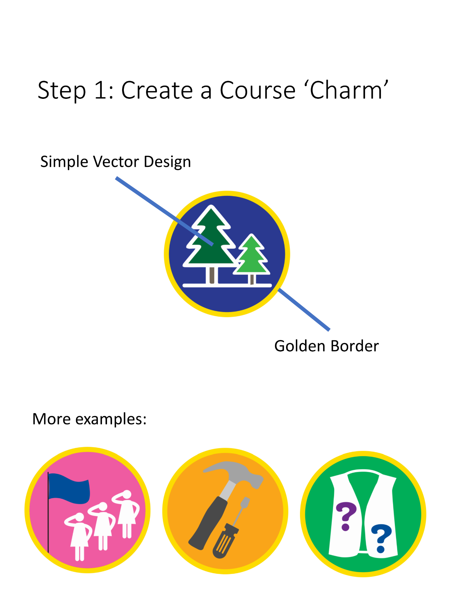

Girl Scouts volunteer learning paths
November 2017 to May 2018. Instructional Designer.
This dedicated case study restores the narrative from my original portfolio. The work samples below come from that project.


Overview
In fall of 2017, a fellow Instructional Designer and I worked with the Girl Scouts of America, San Diego troop, to help gamify the courses they offered, with the goal of increasing training compliance and volunteer satisfaction. At that time, they were just focusing on building content and only stuck to the basics in their LMS, Litmos. They wanted to use gamification in the form of badges and charms to increase motivation and improve the learning experience. We also created and example of an immersive AR training module using Metaverse Studio.
Audience
: Girl Scouts Troop Volunteers
and Instructional Design Team
Responsibilities
: Instructional Design, Performance Analysis, Gamification, LMS Integration, Job Aid Creation, AR Training Creation
Tools Used
: Litmos LMS, Microsoft PowerPoint , Metaverse
Analysis
In order to find out the current status of training with the Girl Scouts volunteers, we sent out a survey to all of the users on the Litmos LMS. We mainly wanted to know how many courses the volunteers took, why they took them and any recommendations about how to make the training better. We compiled the significant findings into a document, accessible below:
Significant Survey Findings (as of 11/23/17)
Design Process
It seemed like a majority of people either didn’t know online training existed or didn’t know what to do with it. Our solution was to reorganize the skill tree so that similar courses were listed together, redesign the icons to be more cohesive and create a roadmap to make it very clear on what to do next in the training.
Development
The first thing we did was rearrange the skill trees in Litmos to group courses together by theme. Then we worked together closely with the graphic design team to make sure the icons had a consistent design. We took the icons and added them to a visual learning path to guide the volunteers on what training to do next. We also added signs along the way featuring quotes from famous Girl Scouts to help encourage and motivate learners to keep training.
Implementation &
Evaluation
We implemented all of the material into Litmos and added the Learning Path image as the landing page. We also created a step-by-step guide containing instructions on how to do/locate/implement any processes or templates we used during our project. This guide includes instructions on how to create a charm, put a charm into a Course Image template, upload the course image to Litmos, add badges and points to a course or learning path, create a quote board, upload the quote board to Litmos, and how to create skill trees.
Unfortunately, we weren’t able to evaluate the effectiveness of our learning path implementation due to time constraints on the client’s end. Because of their busy season, they were not able to roll out the new training plan early enough for us to see any data reflected, but they hope this is something that can be analyzed in upcoming LDT courses.
In addition to main project of gamifying the training, we also created an example training project with AR using Metaverse Studio. The experience can be accessed by scanning the QR code below, but it seems that after some time the images don't load. Instead, you can click the image below to see the project details, storyboard and branching scenarios we originally used.
Results & Takeaways
We felt like we were able to effectively gamify the training for the Girls Scouts of America, San Diego troop. We found discrepancies in optimals and actuals through surveys with volunteers. We created and implemented new skill trees with a clear learning path to follow and incentive to complete the training. We also put it all together in a nice step-by-step guide for instructional designers in the future to use.
Communication was a key component in the success of this project. We had to set up a time for weekly meetings with our client to reveal any changes we made the week prior, to ask permission to explore functions of Litmos, and to make sure she thought our changes were useful to her organization.
We had to learn how to implement aspects of gamification in a way that was meaningful to the learner. We knew the girl scout troop leaders were motivated by the accrual of badges, so we implemented that type of motivation into the online learning environment. Volunteers could now earn both physical and digital badges based on the tasks they complete. Associating learning paths and courses with point values will allow online training courses to be another source of troop leader pride.
Evidence boundary
We delivered the redesigned learning path and maintenance guide. The client’s rollout timing prevented us from receiving effectiveness data, so the delivered system is the result I can substantiate.